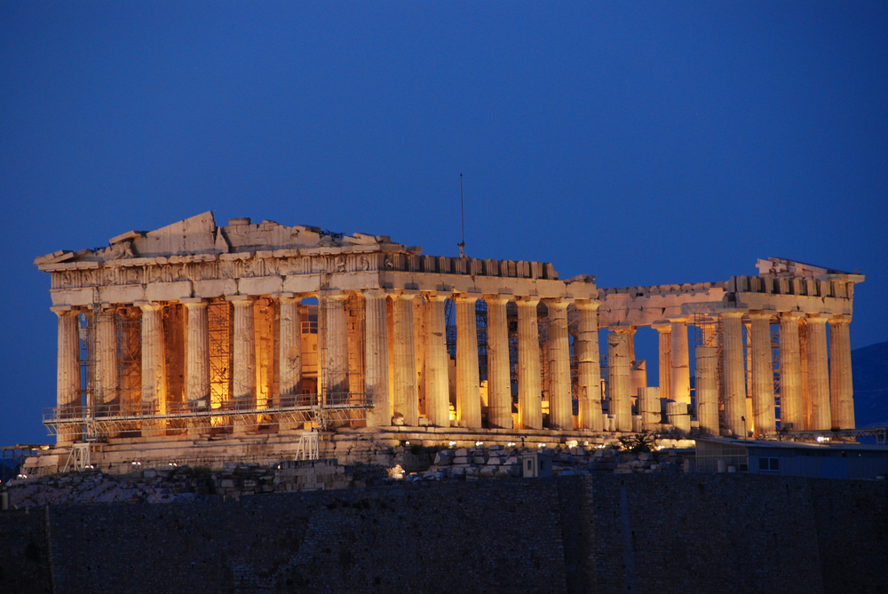

ул. Льва Толстого,17. Одесса, Украина
ул. Льва Толстого,17. Одесса, Украина
 Пн-Пт: 09:00 - 19:00. Сб: 11:00 - 16:00
Пн-Пт: 09:00 - 19:00. Сб: 11:00 - 16:00
Греция - страна удивительной красоты, где яркое солнце согревает жителей практически круглый год. Лазурное море, золотистые пляжи, белые дома, аромат крепкого кофе и хвойных растений - неповторимая атмосфера Греции располагает к незабываемому и потрясающему отдыху.Общая информация. Столица государства: Афины. Считается торговым и финансовым центром страны. Численность населения столицы с учетом пригородов составляет 3,2 млн. человек. География: страна находится на Балканском полуострове и на островах, которые прилегают к нему и к Малой Азии. Граничит с Болгарией, Турцией, Албанией. 1/5 страны - острова, которых насчитывается порядка 2 тысяч. Протяженность береговой линии - 4100 км. Омывается Средиземным морем, в т.ч. Эгейским и Ионическим морями. Остров Крит омывается с южной стороны/ Ливийским морем. Официальный язык: государственный язык - греческий, на котором разговаривает практически всё население. Валюта: евро (€ EUR). Религия: основной религией является православное христианство. Что касается остальных религий: мусульман в Греции около 230 000, католиков - около 58 000, протестантов - 40 000, иудеев - 5 000. Климат: умеренный средиземноморский. Благодаря этому, зима здесь мягкая и сопровождается высокой влажностью. Летом, напротив, палящее солнце нагревает воздух до отметки в 28-32 градуса. Население: 11 млн. человек. Греки составляют большую часть населения. Официально признаны мусульмане Фракии, которые включают турок, цыган-мусульман и болгароязычных мусульман. Телефонный код: международный телефонный код +30. Стоит заговорить о Греции, как сразу на ум приходят всесильные Олимпийские Боги во главе с Громовержцем Зевсом, восседающим на высоченном троне в своих чертогах на вершине Олимпа, или гомеровские герои, философы древности и искусные ваятели античных времен, а также великий поход Александра Македонского и разбросанные по побережью Средиземного и Чёрного морей множество греческих колоний, оставивших глубокий след в культурах разных народов в процессе эллинизации Востока. Правда, сегодня Греция все чаще ассоциируется у всех с теплым солнцем, лазурным морем, белыми домами, ароматом кофе со стаканом холодной воды и разнообразными вечерними развлечениями - в общем, со всем тем, что располагает к неспешности, расслаблению и отдыху. Погода и климат. Умеренный средиземноморский климат обеспечивает все условия для идеального отдыха. Зима мягкая и отличается повышенной влажностью, а лето - напротив, сухое и жаркое. Средняя температура в июле +32°C. Погода весной и осенью постоянно меняется. Это время лучше посвятить знакомству с уникальными достопримечательностями, чем пляжному отдыху. Летний зной гораздо легче переносится на побережьях и островах Греции за счет бризов. В крупных городах в безветренное время жара ощущается намного сильнее. Идеальное время для пляжного отдыха - сентябрь и октябрь. Вода нагревается к началу июня и долго не остывает после лета, вплоть до октября и ноября. Самая мягкая зима - на Крите и островах Эгейского моря. Средняя температура в январе +10°C. Так или иначе, это именно та страна, в которой можно отдохнуть, сочетая приятное с полезным: проводя свой отпуск у моря можно параллельно осмотреть все достопримечательности в местах отдыха и их окрестностях. И в том, и в другом случае, поражает многообразие - как в природном ландшафте, так и в исторических пластах. Свою независимость от Османской империи Греция получила в 1830 году, после национально-освободительной войны 1821—1829 годов. Первым президентом независимой Греции стал Иоанн Каподистрия, однако вскоре в Греции была установлена монархия и на престол был приглашён несовершеннолетний Оттон Баварский из династии Виттельсбахов. Восстание 3 сентября 1843 г. заставило короля Оттона предоставить Конституцию и основать представительское Национальное собрание. В 1863 году Оттон был свергнут, а на греческий престол был приглашён датский принц Вильгельм, который стал Георгом I. В честь его коронации Великобритания подарила Греции Ионические острова. В 1877 году по инициативе Харилаоса Трикуписа, наиболее яркой фигуры греческой политики того времени, король был лишён права влиять на Национальное собрание путём выдвижения вотума недоверия премьер-министру страныПремьер-министр Элефтериос ВенизелосПосле завершения Балканских войн 1912—1913 годов Греция значительно расширила свою территорию. В последующие годы политическая борьба между королём Константином I и премьер-министром Элефтериосом Венизелосом расколола греческое общество накануне Первой мировой войны. После завершения последней Греция вступила в войну с Турцией, возглавляемой тогда Мустафой Кемалем Ататюрком. Эта война привела к потере Грецией части территории и массовому обмену населением между двумя странами в рамках подписанного 24 июля 1923 года Лозаннского мирного договора.28 октября 1940 года фашистская Италия потребовала от Греции предоставить плацдарм для размещения своих сил, на что премьер-министр Иоаннис Метаксас отказал категорическим «нет», понимая, что теперь война для Греции становится неотвратимой. Поначалу греки успешно отражали натиск вторгшихся с территории Албании итальянцев, но в апреле 1941 года в Грецию вторглись германо-болгарские войска. На оккупированной территории было создано марионеточное Греческое государство. Хотя немецкие войска были выведены с территории страны в 1944 году в результате наступления советской армии в направлении Югославии, с 28 октября 1942 года в Греции празднуют день ответа «Нет» на ультиматум стран оси Италии и Германии как общенациональный праздник — день Охи («нет»).В начавшейся в 1946 году Гражданской войне Коммунистическая партия Греции потерпела поражение. В 1949 году в Греции восстановлена монархия, которая была окончательно отменена 21 апреля 1967 года, после военного переворота «чёрных полковников», поддерживаемых Соединёнными Штатами Америки. После свержения военной хунты в страну из Парижа вернулся предыдущий премьер-министр Константинос Караманлис, по результатам всенародного референдума монархия была упразднена, и Греция стала парламентской республикой. В 1975 году была принята новая Конституция. В противоположность Новой демократии Караманлиса Андреас Папандреу основал ПАСОК; эти партии и сейчас остаются наиболее влиятельными в стране.В 1980 году Греция повторно присоединилась к военному союзу НАТО (в 1974 году она вышла из него в знак протеста против оккупации северного Кипра). Членом Евросоюза Греция стала 1 января 1981 года.В декабре 2008 года в Афинах вспыхнули массовые беспорядки, которые быстро охватили и всколыхнули всю Европу. Причиной беспорядков было давно нарастающее недовольство экономическим положением, которое значительно осложнялось в связи с начавшимся в том же году Всемирным экономическим кризисом. Поводом к развёртыванию массовых акций протеста, которые нередко перерастали в погромы и беспорядки, стало убийство 6 декабря 15-летнего подростка патрульным афинской полиции. С весны 2010 года настоящим испытанием для правительства стали почти непрерывные общенациональные забастовки, беспорядки и теракты[18].25 января 2015 года были проведены внеочередные парламентские выборы. Победу одержала Коалиция радикальных левых (СИРИЗА), за которую проголосовало 36,34 % избирателей[19]. Из 300 мест в парламенте Коалиция радикальных левых (СИРИЗА) получила 149 мест.В 2020 г. президентом Греции избрана Катерина Сакелларопулу. Она стала первым президентом-женщиной. Заказать тур.
